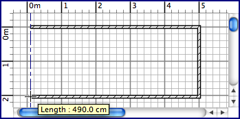

| Drawing walls | |||
To draw walls, you must first choose Plan > Create walls or select the Create walls tool.
Click in home plan at the start point of the new wall, then click or double-click in plan at its end point. As long
as you don't double-click or press the Escape key, each new click points the opposite point of the current wall
out and the start point of the next wall. While drawing a set of walls, the start point of the first wall will be
attached to
an existing
wall start or end point if you
click on that point, and the last wall will be attached to another wall start or end point by
double-clicking on that point. The clicked points are at the middle of the thickness of the drawn walls.  To end the drawing of walls, choose Plan > Select or select the Select tool.
|
|